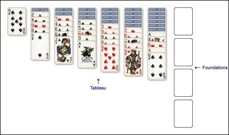

Yukon Instructions
History
The exact origin of Yukon is unclear, but it is believed to have been created around the early 20th century. The game was first recorded in print in 1949 in The Complete Book of Solitaire and Patience Games. The name “Yukon” is thought to be inspired by the Yukon Territory in Canada, known for its rugged terrain and the Klondike Gold Rush. The game’s name reflects its Canadian roots and the challenging nature of the gameplay.
Overview
The objective of Yukon is to move all 52 cards from the seven Tableau columns to the four Foundation piles. Build each Foundation in ascending rank, from Ace through King, using cards of the same suit.
Players
Yukon is a single-player game.
Cards
A standard 52-card deck. Cards can be moved by clicking on them or dragging and dropping them.
Autoplay is a feature that automatically moves eligible cards to the Foundations. The Autoplay button toggles it ON or OFF. The default is ON.
Setup
The Tableau consists of seven columns containing 21 face-down cards and 31 face-up cards. After the deal, the columns contain the following cards:
- 1st column: 1 card facing up
- 2nd column: 1 card facing down and 5 facing up
- 3rd column: 2 cards facing down and 5 facing up
- 4th column: 3 cards facing down and 5 facing up
- 5th column: 4 cards facing down and 5 facing up
- 6th column: 5 cards facing down and 5 facing up
- 7th column: 6 cards facing down and 5 facing up

The Tableau
You can move a single face-up card or a group of face-up cards from one Tableau column to another. The cards in the group do not need to be in sequence. Only the top card of the moving group must fit the destination card by descending rank and alternating color.
Example: Suppose a group contains a red 6 at the top of the group with a red 10 and a black 2 below it. You may move the entire group onto a black 7 because the red 6 is one rank lower than the black 7 and is the opposite color. The order of the other cards in the group does not affect the move.
When you move all face-up cards off a Tableau column and expose a face-down card, that card automatically flips face up.
If you have an empty column, you can only place a King there.
The Foundations
You may move an eligible Tableau card to a Foundation only when it is the uncovered face-up card at the bottom of its column. The card must be the next rank in ascending order for the matching suit. Drag the card onto its Foundation or click it to move it there automatically.
You may move a card from a Foundation back to the Tableau if the move follows the Tableau rule: descending rank and alternating color.
Note: If Autoplay is ON and you need to move one or more cards from a Foundation, turn Autoplay OFF first. Move the card or cards to the Tableau, make the intended Tableau play, and then turn Autoplay back ON.
Game Over
The game ends in one of two ways. You win when all 52 cards are in the four Foundation piles. You lose when no legal moves remain in the Tableau or between the Tableau and Foundations.